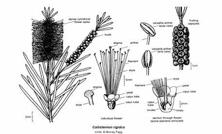
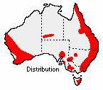

Familia MyrtaceaeÁrboles, arbustos o subarbustos, generalmente perennifolios, aromáticos, con canales o cavidades esquizógenas secretoras, rellenas de aceites esenciales y frecuentemente con células secretoras taníferas, dispersas. Hojas opuestas o alternas, raramente verticiladas, con cavidades secretoras que aparecen como puntos hialinos, simples, enteras, sésiles o pecioladas, sin estípulas o con ellas vestigiales. Inflorescencias axilares o terminales, en cima umbeliforme o racemiforme, a veces capituliforme, o flores solitarias y axilares. Flores hermafroditas –a veces algunas unisexuales-, actinomorfas o, a veces, zigomorfas, epíginas o períginas en diverso grado. Sépalos (3)4-5(10), libres o soldados a los pétalos para formar un opérculo que se desprende en la madurez del fruto. Pétalos (3)4-5(6), libres o soldados al opérculo caduco. Estambres en general numerosos, raramente 5 ó 10, libres o reunidos en 4-5 fascículos, con los filamentos libres hasta casi la base, a veces con algún estaminodio; anteras ditecas, con dehiscencia longitudinal o foraminal. Gineceo con 2-5(6) carpelos, soldados; ovario súpero o más o menos ínfero -incluido en un hipantio más o menos desarrollado-, con tantos lóculos como carpelos y de placentación axial, a veces unilocular y de placentación parietel; rudimentos seminales anátropos o hemítropos, bitegumentados, de 2 a numerosos por lóculo; estilo terminal y largo, con un estigma capitado o lobado. Fruto en baya, en cápsula loculicida o, raras veces, drupáceo. Semillas de embrión recto o curvo, en general sin endosperma, testa dura.Integrada por unos 130 géneros con c. 3000 especies, que crecen principalmente en las regiones templadas, tropicales y subtropicales del Hemisferio Sur, particularmente en Australia.Se divide en dos subfamilias muy claramente diferenciadas: Myrtoideae –hojas siempre opuestas; flores epíginas, frutos bacciformes o drupáceos-, en general americana, y Leptospermoideae –hojas opuestas o alternas; flores epíginas o períginas; fruto en cápsula-, casi exclusiva de Australia. Género Callistemon Arbustos o pequeños árboles, con la corteza rugosa, agrietada o papirácea,pudiendo desprenderse en placas, de tonalidad oscura a pálida; ramillasjóvenes generalmente rosadas, sedosas o pelosas. Hojas alternas, sentadas ocortamente pecioladas, cilíndricas o de lineares a elípticas, lanceoladas uoblanceoladas, coriáceas, con el ápice agudo, a veces punzante,ocasionalmente cóncavas, con los márgenes enteros; normalmente tienen elnervio principal prominente y los nervios secundarios y glándulas oleíferasmás o menos salientes. Flores bisexuales agrupadas en espigas, que salensobre un involucro de brácteas caedizas, densas o laxas, de oblongas acilíndricas, al principio terminales, pero pronto aparecen en el extremohojas o brácteas foliáceas; hipanto de urceolado a campanulado; cáliz con 5sépalos imbricados, orbiculares, caedizos o semipersistentes, más o menospróximos; corola con 5 pétalos, más largos que los sépalos, cóncavos,orbiculares, caedizos; androceo con numerosos estambres sobresaliendo a lospétalos, por lo menos 2 veces más largos, libres o raras veces unidos en unanillo en la base, con los filamentos generalmente glabros, de color blancoa amarillo, verde, rosa, lila o carmesí; anteras versátiles, de dehiscencialongitudinal, de color amarillo a rojo o púrpura oscuro negruzco; ovariosemiínfero, con 3-4 lóculos, incluido en el hipanto, con numerosos óvulospor lóculo; estilo con un pequeño estigma acabezuelado. Fruto en cápsulaleñosa, globosa, urceolada o cupuliforme, de dehiscencia loculicida en 3-4valvas, generalmente persistiendo varios años sobre la planta, conteniendonumerosas semillas angulosas. Es un género en continua revisión, por lo que su nomenclatura está sujeta acambios.

|
CLAVE DE LAS PRINCIPALES ESPECIES DE CALLISTEMON CULTIVADAS EN ESPAÑA |
||
|
1. |
Filamentos
claramente unidos en la base. Ramas colgantes dándole a la planta aspecto
llorón. Porte arbóreo |
C.
viminalis |
|
1. |
Filamentos
libres o ligeramente unidos en la base. Ramas erectas o algo colgantes, pero
sin darle a la planta aspecto llorón. Porte arbustivo, rara vez arborescente |
2 |
|
2. |
Hojas
normalmente de menos de 5 mm de anchura |
3 |
|
2. |
Hojas
normalmente de más de 5 mm de anchura |
8 |
|
3. |
Hojas
normalmente no mayores de 5 cm de largo |
4 |
|
3. |
Hojas
normalmente mayores de 5 cm de largo |
6 |
|
4. |
Filamentos
rojos o anaranjados con anteras amarillas |
C.
brachyandrus |
|
4. |
Filamentos
amarillentos o verdosos |
5 |
|
5. |
Hojas
de 1,6-2,3 cm de longitud. Filamentos de 8 mm de largo de color crema o
amarillos |
C.
sieberi |
|
5. |
Hojas
de 2-5 cm de longitud. Filamentos de 1,6 cm de largo de color verde
amarillento |
C.
viridiflorus |
|
6. |
Hojas
aciculares. Inflorescencia de 3-6,5 cm de largo. Filamentos amarillo-verdosos
o rojos mate |
C.
pinifolius |
|
6. |
Hojas
planas, lineares. Inflorescencia mayor de 6,5 cm de largo. Filamentos rojos |
7 |
|
7. |
Hojas
con la nerviación prominente. Inflorescencias de 8,5-11 cm de longitud |
C.
rigidus |
|
7. |
Hojas
sin la nerviación prominente. Inflorescencias de 6,5-14 cm de longitud.
Anteras amarillas |
C.
linearis |
|
8. |
Hojas
normalmente no mayores de 7,5 cm de largo |
9 |
|
8. |
Hojas
normalmente mayores de 7,5 cm de largo |
11 |
|
9. |
Filamentos
de 7-17 mm de largo de color amarillo pálido o crema |
C.
pallidus |
|
9. |
Filamentos
de 16-23 mm de largo, de color rojo, rosa o violáceos |
10 |
|
10. |
Hojas
de 8-10 mm de anchura, con pocas glándulas esenciales y la nerviación
prominente |
C.
acuminatus |
|
10. |
Hojas
de 4-7 mm de anchura, con glándulas esenciales prominentes y tuberculadas |
C.
rugulosus |
|
11. |
Filamentos
de hasta 1 cm de longitud de color crema, amarillo pálido, rosa o rojo |
C.
salignus |
|
11. |
Filamentos
de 2,5-3 cm de longitud, de color rojo o rosa |
12 |
|
12. |
Hojas
claramente lanceoladas, de 5-25 mm de anchura, con olor a limón al
estrujarlas. Filamentos de color rojo brillante con las anteras rojas |
C.
citrinus |
|
12. |
Hojas
más o menos lineares, de 4-10 mm de anchura, sin olor a limón al estrujarlas.
Filamentos de color rojo pálido o brillante |
13 |
|
13. |
Inflorescencias
de 5-15 cm de largo; filamentos de color rojo pálido con las anteras
amarillas |
C.
speciosus |
|
13. |
Inflorescencia
de 5,5-7 cm de largo; filamentos de color rojo brillante con las anteras
oscuras |
C.
phoeniceus |
Área de origen y distribución:El género comprende alrededor de 30 especies, en su mayoría del este de Australia y algunas de Nueva Caledonia y Tasmania.

Los callistemon fueron introducidos por primera vez en Europa como plantas ornamentales por Joseph Banks en 1789. La primera especie cultivada en el continente fue Callistemon citrinus (Curtis) Skeels (anteriormente conocida como C. lanceolatus). Observaciones:El nombre genérico se compone de los términos griegos kallos = bello y stemon = estambre, refiriéndose al vistoso colorido de los estambres.El nombre popular lo recibe por el parecido de sus inflorescencias con un limpiatubos.
Otros usos de Callistemon speciosus: Callistemon speciosus tiene aplicaciones terapéuticas semejantes a las de Eucaliptus globulus, como broncodilatador, expectorante y antiséptico (Guerra et al., 2003).
Los limpiatubos en España:Hasta hace relativamente pocos años estas plantas eran casi desconocidas en España, encontrándose prácticamente sólo en jardines botánicos. De un tiempo a esta parte se han empezado a utilizar bastante en jardinería. En Sevilla podemos encontrar por lo menos tres especies diferentes de este género: Callistemon speciosus (Sims) DC., C. Viminalis (Gaertn.) Cheel, con porte llorón, y posiblemente C. pallidus (Bonpl.) DC., con estambres blanco-amarillentos. Estas tres especies se pueden observar en el parque José Celestino Mutis, inaugurado en 1997. Varios ejemplares más jóvenes que el del campus y los de los parques de María Luisa y José Celestino Mutis se encuentran adornando glorietas y jardines de nueva construcción (ejemplo: glorieta de Isla Mágica y zonas ajardinadas de Montequinto).
Localización en el campus de Reina Mercedes:
Jardín Central Norte
Bibliografía y páginas web:
Guerra, C.; Meccia, G.; Khouri, N & Rojas L. 2003. Estudio comparativo de los aceites esenciales de Callistemon speciosus DC. recolectado en los Estados Carabobo, Lara y Mérida (Venezuela). Revista de la Facultad de Farmacia. 45(2): 51-53.
Recopilado por Noemí Medina Zurita, 2005